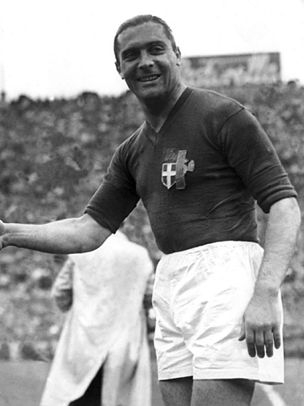
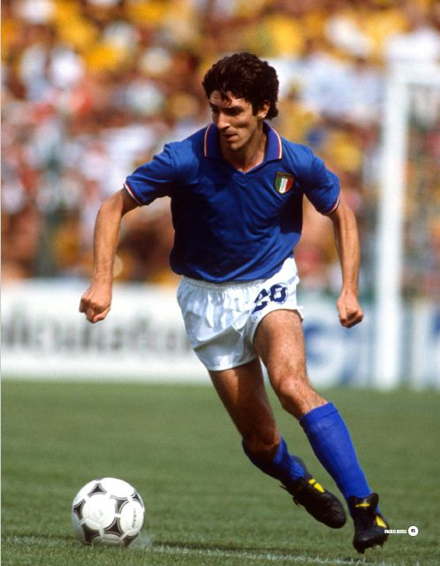
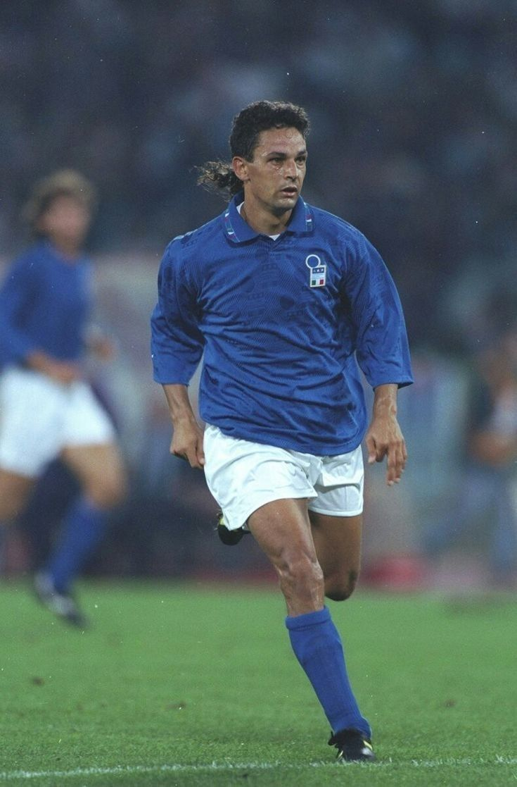
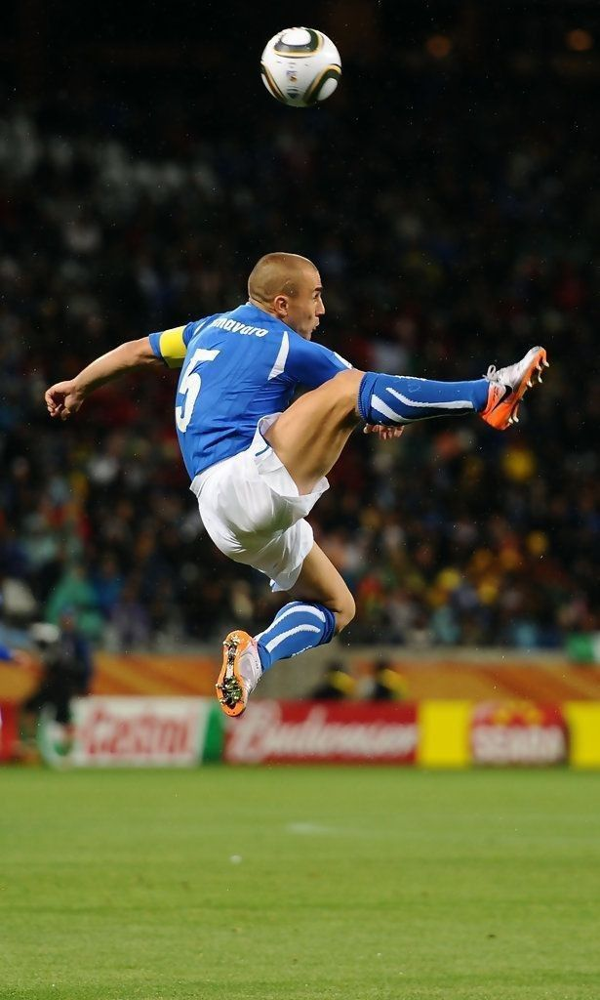
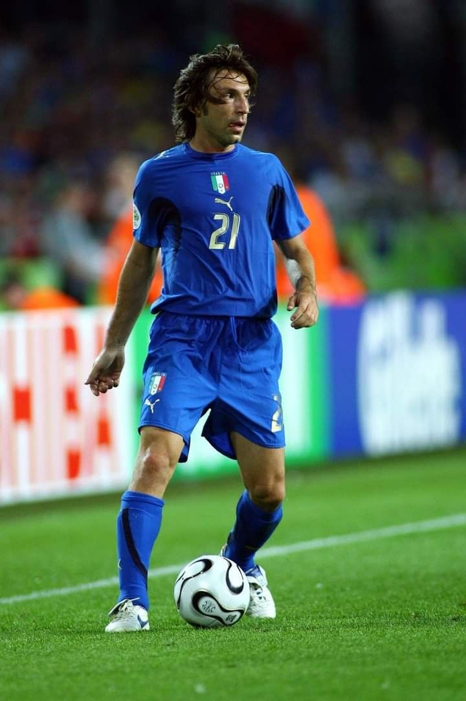
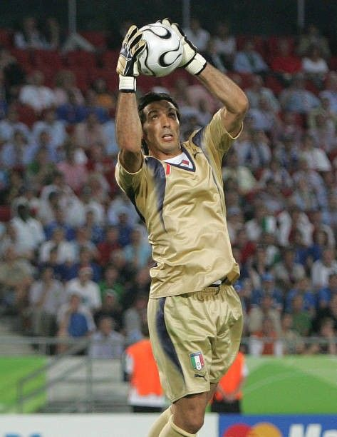

Giuseppe Meazza
1930 - 1939
Giuseppe Meazza foi um dos maiores jogadores da história do futebol italiano. Capitão da Azzurra, conquistou duas Copas do Mundo (1934 e 1938), sendo o primeiro bicampeão mundial da história. Foi artilheiro da Copa de 1934 e é considerado um dos maiores ídolos do futebol italiano.

Paolo Rossi
1977 - 1986
Paolo Rossi foi o herói do tricampeonato mundial de 1982. Artilheiro da Copa com 6 gols, incluindo um hat-trick histórico contra o Brasil nas quartas de final. Foi eleito o melhor jogador da Copa de 1982 e é um dos maiores artilheiros da história da seleção italiana.

Roberto Baggio
1988 - 2004
Roberto Baggio, o "Divino Codino", foi um dos maiores camisas 10 da história italiana. Participou de três Copas do Mundo (1990, 1994 e 1998). Na Copa de 1994, foi decisivo levando a Itália à final, onde infelizmente errou o pênalti decisivo. Foi eleito o melhor jogador do mundo em 1993.

Fabio Cannavaro
1997 - 2010
Fabio Cannavaro foi o capitão e líder da seleção italiana no tetracampeonato mundial de 2006. Zagueiro exemplar, foi eleito o melhor jogador da Copa de 2006 e melhor jogador do mundo no mesmo ano. Com 136 jogos, é o segundo jogador com mais partidas pela Azzurra.

Andrea Pirlo
2002 - 2015
Andrea Pirlo foi o maestro do meio-campo italiano. Campeão mundial em 2006, foi fundamental na conquista do tetracampeonato. Famoso por seus passes precisos e cobranças de falta, é considerado um dos melhores volantes da história do futebol. Participou de três Copas do Mundo.

Gianluigi Buffon
1997 - 2018
Gianluigi Buffon é o jogador com mais partidas pela seleção italiana (176 jogos). Campeão mundial em 2006, é considerado um dos maiores goleiros da história do futebol. Participou de cinco Copas do Mundo e foi fundamental na conquista do tetracampeonato, sendo eleito o melhor goleiro do torneio.